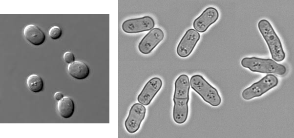

Nhận diện nấm và nguyên sinh vật
Slide 7–10 · Nấm men, nấm sợi và nguyên sinh vật · 8 trắc nghiệm và 1 tự luận
Bắt đầu học ↓Học buổi rút gọn · đọc hình và làm 10 câu · Học trọn chương và làm bộ 80 trắc nghiệm, 15 tự luận
Sau buổi này
- Liên hệ nảy chồi, khuẩn ty, bào tử và lục lạp với nhóm sinh vật.
- Phân biệt nấm men, nấm sợi, nguyên sinh vật quang dưỡng và nguyên sinh vật ăn mồi.
- Chọn đại lượng định lượng phù hợp câu hỏi đối với từng mẫu.
Gợi nhớ · 5 phút
Nhắc lại vì sao nhìn thấy tế bào hình bầu dục chưa đủ để gọi tên nhóm. Nếu thấy một chồi nhỏ, cần thêm dữ kiện nào?
Đọc hình và nắm kiến thức · 20 phút
Quan sát hình minh họa

Ảnh SEM nấm men bánh mì ở trái. Sơ đồ bên phải minh họa chồi, sẹo chồi và dạng chuỗi giả sợi.
Quan sát · Tìm một tế bào bầu dục có phần nhỏ nhô ra ở ảnh SEM, rồi tìm dấu Bud và Bud scars trong sơ đồ.
Dự đoán · Nếu các tế bào con còn nối sau khi nảy chồi, ảnh có thể xuất hiện dạng gì?
Mở giải thích sau khi dự đoán
Có thể thấy chuỗi tế bào nảy chồi gọi là giả sợi. Nhìn các chỗ thắt và từng tế bào hình bầu dục giúp phân biệt chuỗi này với mạng khuẩn ty trên một ảnh khác.
| Hồ sơ | Nét thấy | Cách giải thích |
|---|---|---|
| Nấm men | Tế bào mẹ và chồi | Sinh sản vô tính ở nhóm nảy chồi |
| Nấm sợi | Ống phân nhánh thành mạng | Khuẩn ty tạo hệ sợi |
| Tảo quang dưỡng | Lục lạp | Bào quan thực hiện quang hợp |
| Nguyên sinh vật ăn mồi | Lông bơi và không bào thức ăn | Vận động và lấy thức ăn |
Ghép hình thái với chức năng để ghi nhớ nhóm.
- Tế bào rời
Xem số tế bào quan sát trên thể tích.
- Bào tử
Báo số bào tử theo thể tích hoặc khối lượng mẫu.
- Hệ sợi
Báo sinh khối khi câu hỏi là lượng vật chất tích lũy.
Mỗi kiểu hình phù hợp một cách báo kết quả.
Đọc hình để tự rút ra cơ chế
Quan sát · Ảnh A có tế bào đơn với chồi gắn bên cạnh. Ảnh B có mạng sợi kéo dài.
Dự đoán · Nếu cùng đếm 'mỗi hình thấy là một cá thể', bạn có thể gặp lỗi gì khi so hai ảnh?
Mở giải thích sau khi dự đoán
Chồi gắn, cụm tế bào và mảnh sợi có thể được đếm theo các đơn vị khác nhau. Trước khi so tỉ lệ, phải nêu tiêu chí phân biệt tế bào, chồi hay đoạn sợi và áp dụng nhất quán.
Từ một chồi đến một mạng sợi
Ở nấm men bánh mì, hãy tìm tế bào lớn nối với một chồi nhỏ qua một cổ hẹp. Nhân phân chia, một nhân con đi vào chồi, rồi hai tế bào ngăn cách ở cổ. Nếu các tế bào con dài ra và vẫn dính với nhau sau phân chia, cả chuỗi có thể trông như một sợi. Đó là giả sợi. Hãy tìm chỗ thắt giữa các tế bào để phân biệt chuỗi ấy với một ống khuẩn ty. Ở nấm sợi, hãy lần theo một ống qua điểm phân nhánh. Ống đó là khuẩn ty. Nhiều khuẩn ty đan thành hệ sợi. Một số khuẩn ty có vách ngăn ngang, một số chứa nhiều nhân trong một khoang liên tục.

Trái, S. cerevisiae có chồi nhỏ gắn lệch một phía trên tế bào mẹ. Phải, S. pombe kéo dài theo trục dọc và xuất hiện vách ngang ở giữa. Hai ảnh dùng để so hình dạng, không có thước chung để so kích thước.
Chọn phép đo theo câu hỏi
Khi hỏi dịch bánh mì có bao nhiêu tế bào nấm men mỗi mL, ta cần số tế bào và thể tích đã quan sát. Nếu đếm 48 tế bào trong tổng thể tích 0,002 mL của mẫu chưa pha loãng, mật độ là 48/0,002 = 24 000 tế bào/mL. Con số này gồm mọi tế bào nhận ra bằng mắt. Nếu hai tế bào sống dính nhau rồi cùng cho một khuẩn lạc, phép đếm khuẩn lạc ghi một CFU.
Với một mạng sợi, một lần phân nhánh không tạo ra một cá thể mới có ranh giới rõ. Muốn so lượng vật chất đã tích lũy, có thể báo khối lượng khô trên lít. Muốn so sản lượng bào tử, cần báo số bào tử trên lượng mẫu. Sợi có thể tiếp tục dài trong khi số bào tử chưa đổi, nên phải ghi đơn vị ngay khi đặt câu hỏi.
Trong ảnh hiển vi điện tử dưới đây, nhãn Sporangiospores chỉ bào tử, còn Sporangiophore là cuống mang túi bào tử. Khi mục tiêu là số bào tử, hãy nhận diện đúng vật cần đếm trước khi chọn mẫu số.

Ảnh nguồn có nhãn Sporangiospores và Sporangiophore. Giữ nguyên thước 10 µm ở góc ảnh.
Thức ăn đi vào tế bào bằng đường nào?
Nấm hấp thu các phân tử hòa tan qua màng. Nhiều loài tiết enzyme để cắt các đại phân tử bên ngoài trước khi hấp thu. Ở trùng giày, lông bơi đưa hạt thức ăn về rãnh miệng. Hạt được bao trong không bào thức ăn và tiêu hóa bên trong tế bào. Quan sát hạt đi từ rãnh miệng vào không bào cho biết cơ chế thu nhận dinh dưỡng.

Giữ ảnh vi mô và thước 50 µm bên sơ đồ. Tìm cùng lúc rãnh miệng, không bào co bóp, nhân nhỏ và nhân lớn.
Đọc một tế bào màu xanh
Lục lạp có sắc tố hấp thu ánh sáng. Ở sinh vật quang tự dưỡng, năng lượng ánh sáng hỗ trợ cố định carbon vô cơ để tạo chất hữu cơ. Một tế bào có thể vừa quang hợp vừa sử dụng chất hữu cơ từ môi trường. Hãy tách hai câu hỏi khi đọc ảnh: cấu trúc nào hiện diện và dòng vật chất nào đã được quan sát? Một ảnh tĩnh có thể cho thấy lục lạp. Muốn xác nhận tế bào nuốt hạt, cần quan sát hạt được đưa vào trong tế bào.
Liên hệ thực tế
Trong một báo cáo lên men, mẫu A có mật độ tế bào nấm men tăng gấp đôi, mẫu B có khối lượng khô hệ sợi tăng gấp đôi. Hai tỷ số cùng bằng 2 nhưng tử số ban đầu thuộc hai đại lượng khác nhau. Báo riêng hai kết quả và ghi đơn vị để người đọc biết thứ gì đã tăng.
Tự kiểm · 25 phút
Bốn ảnh từ phòng học và mẫu nước ao
A, B, C và D là các mô tả tổng hợp. Người đọc cần lập chú giải ảnh theo quan sát và chọn phép đo tương ứng.
| Ảnh | Quan sát |
|---|---|
| A | Tế bào bầu dục có chồi, nhìn thấy nhân. |
| B | Mạng ống phân nhánh, có túi chứa các bào tử nhỏ. |
| C | Tế bào màu lục có lục lạp, dữ liệu xác nhận tăng sinh nhờ ánh sáng và CO₂. |
| D | Tế bào bơi nhờ lông, quan sát thấy nuốt các hạt vào không bào thức ăn. |
Đối chiếu và hẹn ôn · 10 phút
Chọn một chỗ còn phân vân. Giải thích lại bằng lời của mình rồi thử một câu cùng dạng.
Mở đáp án và giải thích · VSV-04
Xem trong bộ bài tập của chủ đề
Học tiếp theo slide
- Đọc vách, bào quan và vòng đời nấm men
- Đếm theo thể tích và chọn đúng phép định lượng
- Đọc hình sinh sản của nấm sợi
- Bản đồ nhận dạng nguyên sinh vật
Buổi tiếp theo · Virus, viroid và prion qua ba loại bằng chứng